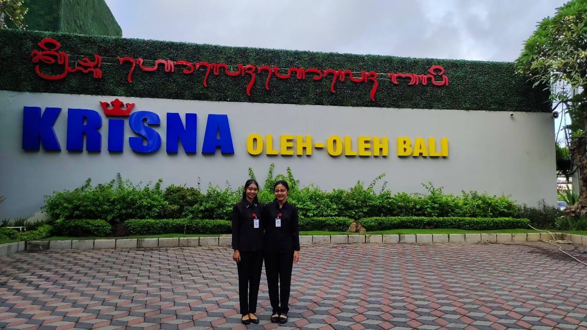

30 Agustus 2024
3 minutes read

Pra Kegiatan Magang Di Krisna Oleh Oleh Bypass
Halo, selamat datang di blog ini.
Saya Ni Wayan Wana Dewi, biasa dipanggil Wana. Saya merupakan seorang mahasiswi dari Universitas Pendidikan Ganesha atau biasa dikenal dengan UNDIKSHA, yang saat ini sedang menjalani pendidikan program studi S1 Manajemen, semester 7, di Fakultas Ekonomi. Saat ini saya sedang menjalani salah satu program wajib yang diadakan oleh UNDIKSHA, yaitu program magang.